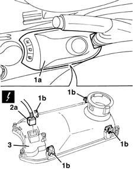
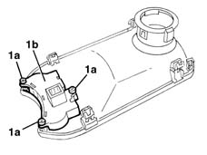

7040L28 tunnel switch panel - r r
- Path
- Procedures > 70 FITTINGS > 7040 BODYSHELL INTERIOR TRIMS AND FITTINGS > 7040L cabin floor covering > 7040L28 tunnel switch panel - r r
- Kind
- repair procedure (removal / refitting; the operation number is the code)
- Applies to
- all engines; all production periods
- Interactive page
- https://sloeber94.github.io/elrnDB-lYpsln/en/#/2429603
Applies to: all engines; all production periods
 Removing
Removing
 Refitting
Refitting1. Move the switch trim (1a) releasing the retainers (1b).
2. Disconnect the electrical connection.
 | Name | Connector |
|---|---|---|
2a | Switches on tunnel |
3. Recover the trim.

Applies to: all engines; all production periods
1. If necessary, undo the bolts (1a) and keep the switch unit (1b).

Applies to: all engines; all production periods
Refitting
RemovingCheck that the trim and switches are not damaged.
If removed, fit the switch unit and secure it with the bolts.
Connect the electrical connection.
Fit the trim and fit the retainers.
Check that the switches are working.
Topics linked from this page (1)
Topics that link to this page (26)
- 2125C20 gearbox manual control support and lever - r + r for checking and replacement if necessary
- 2125C22 gear lever and mount - r r
- 2125C28 gear control lever - r r
- 2125C30 gear engagement cable - r r
- 3350E30 lateral acceleration and yaw sensor r r
- 3380A10 handbrake lever - r+r
- 5010D27 upper mixed air temperature sensor (1), lh or rh - r r following electrical circuit check
- 5010D28 upper mixed air temperature sensor (1), lh or rh r r following electrical circuit check
- 5010D30 passenger compartment air temperature sensor - r+r following electrical wiring check operation
- 5020B10 heater control support - r+r
- 5020B28 air conditioner symbol light bulb/s - includes control panel r+r
- 5020B35 outdoor/recirculation air intake flap control cable - r r
- 5020B38 air distribution flap control cable - r+r
- 5020B42 air mixer flap control cable - r+r
- 5040C10 air conditioner box - r+r
- 5040D18 air conditioner control unit - r r
- 5040D20 air conditioner control switches/button unit - r r
- 5040D75 Air conditioning recirculation flap control MOTOR - R.R.
- 5505A25 SWITCH UNIT for OPTIONAL EQUIPMENT - R.R.
- 5550D18 handbrake on warning light switch - r+r
- 5580C22 AIR BAG MODULE - Passenger side - R.R.
- 7040A10 instrument facia trim - r+r
- 7040A25 central facia trim - r r
- 7040A28 TRIM on gearbox control panel - R.R.
- 7040L10 cabin floor carpet - r r
- 7040L20 tunnel trim - r r